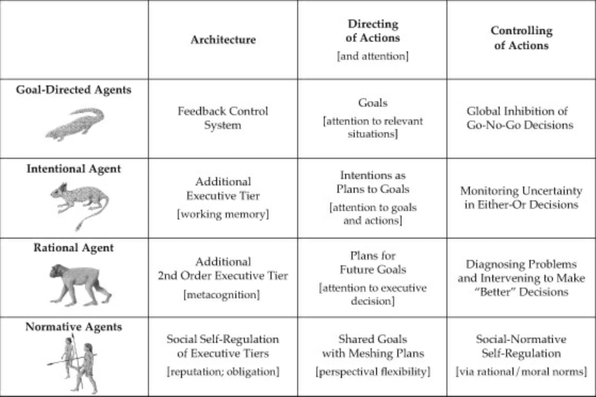
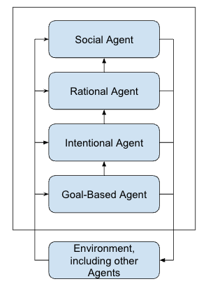

Overview
Agency is the most generalized organizational framework within which individuals formulate and produce their actions.
— M. TomaselloAn agent senses, responds, and maintains a model of its environment, while performing activities to achieve its goals.
— IEEE 2874-2025Natural Agency
Agency predates contemporary AI. Agency in natural organisms is the most generalized organizational framework within which individuals formulate and produce their actions (Evolution of Agency, Tomasello, 2022). Agents decide for themselves what to do according to their own best judgment in a given situation. Types of psychological agents in evolutionary order of emergence are shown in the Table.
Each new form of psychological organization represented increased complexity in the planning, decision-making, and executive control of behavior. Each also led to new types of experience of the environment and, in some cases, of the organism's own psychological functioning, leading ultimately to humans' experience of an objective and normative world that governs their thoughts and actions.

Agent Functions
Agent types are distinguished by the functions they perform (Norvig) which are visible through behavior or statements of the agent's developer.

| Agent Type | Agent Functions (cumulative going down) |
|---|---|
| Goal-Directed Agent |
|
| Intentional Agent |
|
| Rational Agent |
|
| Social Agent |
|
Emergent Structures
Emergent Form provides the basis for Agency.
An organized being is then not a mere machine, for that has merely moving power, but it possesses in itself formative power of a self-propagating kind which it communicates to its materials though they have it not of themselves; it organizes them, in fact, and this cannot be explained by the mere mechanical faculty of motion.
— Kant, Critique of Judgment, 1790One way to get to exist as a complex entity in the non-ergodic universe is to be a living evolving "Kantian Whole."
— Kauffman, Eros and Logos (Kantian Wholes), 2020A complex adaptive system acquires information about its environment, identifying regularities in the information, condensing the regularities into a kind of 'schema' or model, and acting in the real world on the basis of that schema.
— Murray Gell-Mann, The Quark and the Jaguar: Adventures in the Simple and the Complex, 1994Autonomy and diversity, the maintenance of identity and the origin of variation in the mode in which this identity is maintained, are the basic challenges presented by the phenomenology of living systems to which men have for centuries addressed their curiosity about life.
— Maturana and Varela, Autopoiesis and Cognition, 1972Interested in the natural philosophy of agency or its application to agentic AI design? Get in touch.
✉️ percivall@ieee.org